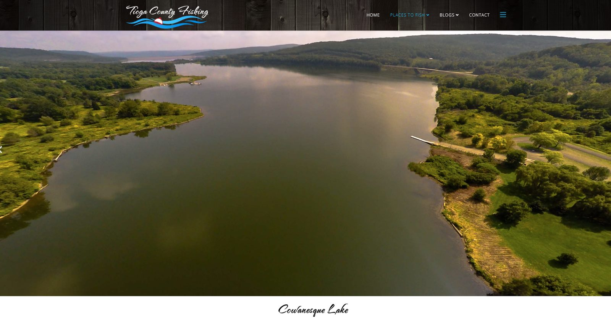
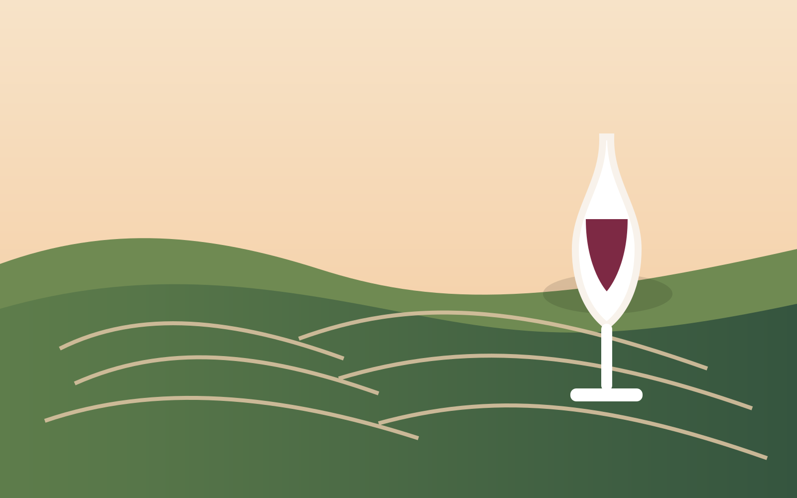
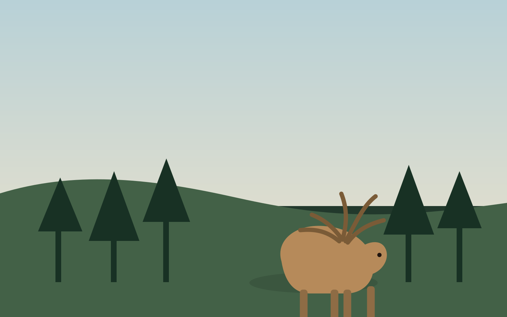
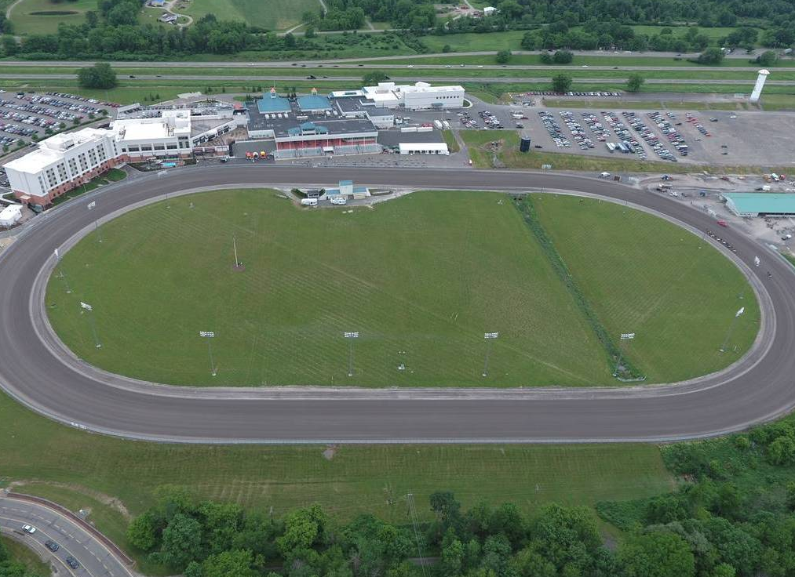

Cowanesque Lake
About a mile away for fishing, boating, swimming, and classic summer lake days. Bring the rods, bring the boat, or keep it simple with a relaxed day near the water.
Explore the Region
Serenity Woods sits near the Pennsylvania/New York border, giving guests a rural private stay with easy access to lakes, hiking, museums, wineries, waterfalls, small towns, and scenic drives.

About a mile away for fishing, boating, swimming, and classic summer lake days. Bring the rods, bring the boat, or keep it simple with a relaxed day near the water.

Make a day of Finger Lakes waterfalls, hiking, wine-country drives, and Seneca Lake scenery.

Scenic overlooks, trails, biking, foliage, and one of Pennsylvania’s signature outdoor destinations.

Use nearby Elkland for basics, pizza, bar food, groceries, and quick restocking. Head toward Corning/Painted Post for more restaurants, breweries, and larger stores.
Trip styles
Pool time, creek exploring, board games, nearby lake days, easy meals on the deck, and plenty of space to spread out.
Wine tours, breweries, fire pit nights, dinners out, slow mornings, and a quiet house to return to.
Fishing, hiking, scenic drives, waterfall hunting, race weekends, and leaf-peeping season in the northern PA / Finger Lakes corridor.
Local favorites
A quiet house is great, but the location also makes it easy to build a weekend around outdoor fun, scenic day trips, and a few classic regional experiences.
Head to Cowanesque Lake for relaxed mornings on the water, shoreline casting, or an easy picnic-and-paddle afternoon close to the house.

Plan a day trip into Finger Lakes wine country for winery stops, tasting rooms, vineyard views, and a leisurely lunch with friends.

For guests visiting in season, Serenity Woods works as a comfortable home base for hunting trips and public-land adventures in the northern Pennsylvania corridor.
Spend a day chasing waterfalls around Watkins Glen and the surrounding region, with gorge walks, scenic overlooks, and plenty of photo stops.

Motorsports fans can make a fun day trip to Watkins Glen for race weekends, track events, and the energy that comes with a big destination circuit.
If you want something memorable, plan an evening or overnight run to Cherry Springs State Park for some of the darkest skies in the region.
Sample weekend
Arrive, settle in, grocery run, dinner on the deck, and fire pit time.
Pool morning, lake or waterfall afternoon, then Corning or Finger Lakes dinner.
Coffee on the deck, slow checkout rhythm, and a scenic drive home.
Book through Airbnb or VRBO for live availability and current rates.